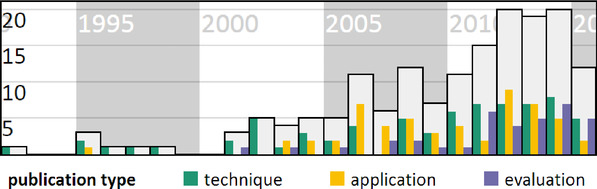
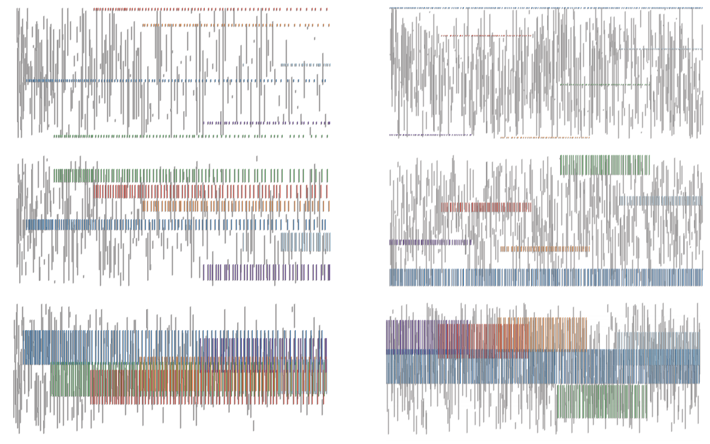
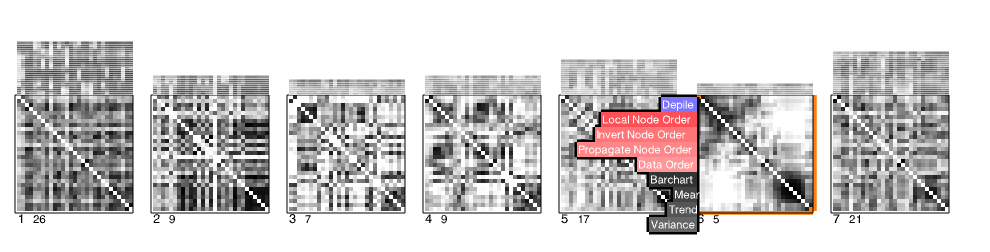

- What is dynamic network?
- Example of dynamic networks?
a people-centric view of your email life
Immersion: Once you log in, Immersion will use only the From, To, Cc and Timestamp fields of the emails in the account you are signing in with. It will not access the subject or the body content of any of your emails.
A Taxonomy and Survey of Dynamic Graph Visualization
 Yearly number of publications on dynamic graph visualization according to our literature database; light grey bars indicate the total number of publications and coloured bars distinguish the publications by type.Fabian Beck, Michael Burch, Stephan Diehl, and Daniel Weiskopf
standard deviation (bottom)
combined criteria (middle) for synthetic data sets
Edges are colored according to edge set size
 VAN DEN ELZEN S., HOLTEN D., BLAAS J., VAN WIJK J.: Reordering massive sequence views: Enabling temporal and structural analysis of dynamic networks. In Proc. IEEE Pacific Visualization Symp. (2013), pp. 33–40.Small MultiPiles: Piling Time to Explore Temporal Patterns in Dynamic Networks
 Benjamin Bach, Nathalie Henry Riche, Tim Dwyer, Tara Madhyastha, Jean-Daniel Fekete, Tom GrabowskiQuestions?